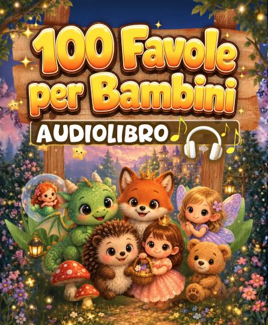

✦ Accedi gratis ✦
Accesso gratuito · nessuna carta di credito
📖 Scegli la sezione · ▶️ Ascolta · 🌙 Buona nanna
📖
Bentornato, amico!
Le tue 100 favole ti aspettano
📲 Installa l'app
Aggiungila alla schermata Home
1
Apri in Safari
2
Tocca Condividi ⬆️ in basso
3
Tocca "Aggiungi alla schermata Home"
4
Tocca Aggiungi — l'icona 📖 apparirà!
1
Apri in Chrome
2
Tocca i tre puntini ⋮ in alto
3
Tocca "Aggiungi alla schermata Home"
4
Tocca Installa